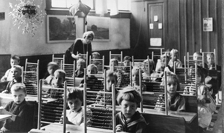

CUM S-A SCHIMBAT EDUCAȚIA?
Educația s-a schimbat în timpul revoluției industriale. La început (înainte de anii 1800) copiii săraci nu își puteau permite prețul pentru a merge la școală, deoarece școala nu era încă gratuită în Marea Britanie, dar apoi încet școala a devenit obligatorie, iar copiii cu clase mai sărace puteau merge la școală, iar multe acte și Sindicatele au participat la sponsorizarea îmbunătățirii școlilor din Marea Britanie. A schimbat întreaga țară pentru că țara avea mai mulți copii școlari și adulți care să lucreze în locuri de muncă mai bune și să creeze vieți mai bune pentru oamenii din următoarea generație.
CUM A SCHIMBAT SOCIETATEA?
A schimbat societatea pentru că mai mulți oameni ar putea fi educați mai bine și întreaga țară ar putea fi mai avansată și să se dezvolte mai mult, pentru că cu cât oamenii sunt mai educați, cu atât țara și economia ei devin mai inteligente. De asemenea, a schimbat societatea pentru că fiecare persoană putea acum să obțină o diplomă de știință sau matematică, deoarece era bine educată la școală. Și probleme precum problemele medicale ar putea fi rezolvate.
CRONOLOGIE
Înainte de anii 1800, copiii săraci nu își permiteau să meargă la școală, deoarece școlile nu erau gratuite.
1833 Guvernul a făcut obligatoriu să aibă cel puțin 2 ore de studii pe zi pentru copiii care lucrau în fabrici.
1844 Un sindicat din Marea Britanie numit: The Ragged Schools Union a fost creat pentru a oferi copiilor foarte săraci șansa de a merge la școală.
1868 Public Schools Act a îmbunătățit școlile publice din Marea Britanie, cum ar fi Eton și Harrow.
1870 Forster’s Act a sponsorizat un internat pentru clasele primare.
1880 Scoala era obligatorie pentru copiii sub 10 ani.
1902 „Legea educației” a creat școala secundară pentru copii.